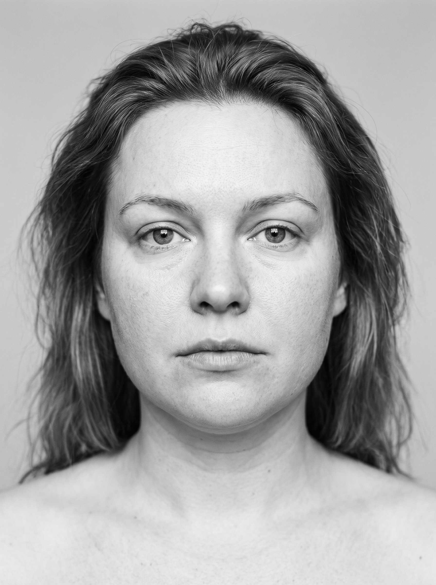
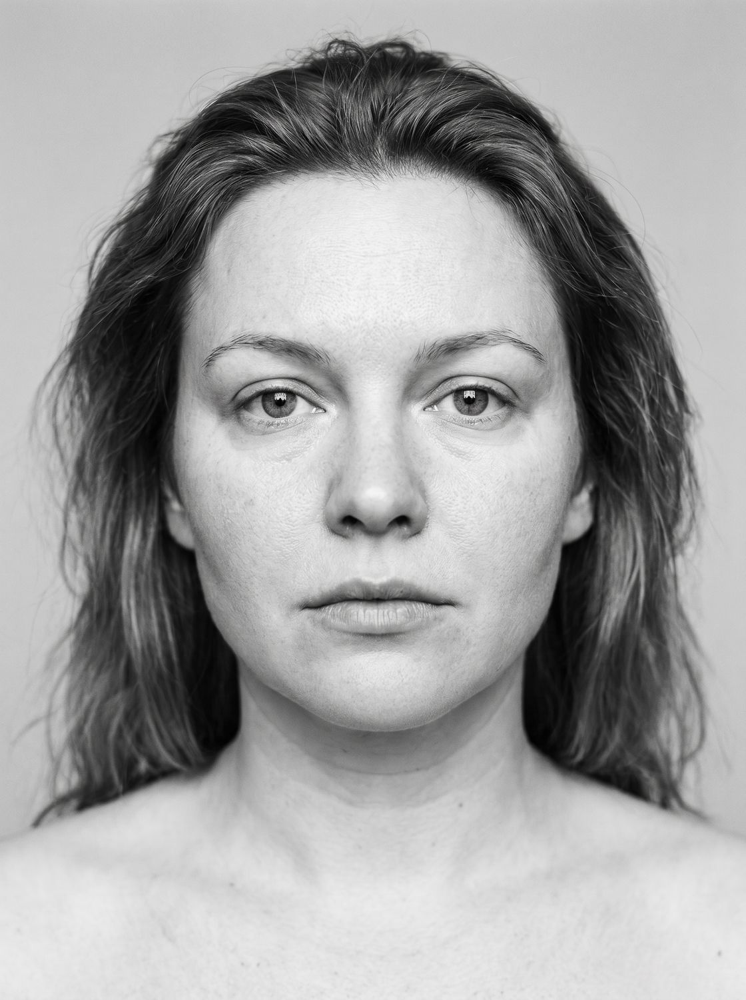

Método em vídeo + 4 guias práticos para reduzir a aparência de inchaço facial e devolver contorno e frescor, no mesmo dia, sem procedimento, sem creme caro.
Um método enxuto, feito para consumir em uma sentada e executar já na manhã seguinte. Você recebe:
Prévia o método em vídeo, no seu celular
Finalize em 1 minuto, com pagamento seguro. Escolha só o método ou o pacote completo.
O acesso cai imediatamente no seu celular, direto após a compra.
Siga o vídeo de 7 minutos e veja a diferença já no primeiro espelho do dia.
Massagear o rosto sem antes abrir as saídas de drenagem é como espremer uma mangueira com a ponta fechada. O Rosto Leve inverte a ordem que quase todo mundo usa, e é por isso que o resultado aparece em minutos, não em semanas.
Liberar as saídas no pescoço e na clavícula. O caminho precisa estar aberto antes de tudo.
Pressão levíssima, conduzindo o líquido do centro do rosto para as saídas já abertas.
O frio contrai os vasos e devolve o líquido à circulação, o passo do resultado imediato.
Hidratar e fixar com os hábitos do dia que seguram o efeito por mais tempo.
O resultado do Rosto Leve é visual e imediato: o tipo de antes e depois honesto que você mesma consegue registrar no espelho de casa. Arraste para comparar.


As 4 fases guiadas em tempo real, passo a passo.
Uma página para colar no espelho e nunca mais errar a ordem.
Refeições simples que reduzem a retenção, sem dieta maluca.
Espaço para depoimentos reais, colete dos primeiros compradores
★★★★★
“Meu rosto de manhã era o meu maior incômodo. Em uma semana já via diferença antes de sair pro trabalho.”
Depoimento de exemplo
★★★★★
“Usei antes do casamento da minha irmã. As fotos ficaram outra coisa. Valeu cada centavo.”
Depoimento de exemplo
★★★★★
“Sempre achei que era gordura no rosto. Era inchaço. Simples assim, e agora eu sei o que fazer.”
Depoimento de exemplo
Uma página. Cola no espelho. O ritual inteiro sem reassistir nada.
Cinco minutos para emergências: a manhã depois de beber, antes de uma foto.
Como se posicionar, iluminar e enquadrar para parecer descansada em qualquer câmera.
Uma semana de refeições simples que reduzem a retenção.
Dois caminhos para o mesmo rosto mais leve. A maioria leva o Completo, é onde estão os bônus.
Só o método. Para quem quer o ritual e nada mais.
pagamento único
O método + os 4 bônus. O melhor custo-benefício.
ou 12x de R$ 3,79 · pagamento único
Garantia incondicional de 7 dias. Faça o ritual amanhã de manhã. Se não vir diferença no espelho, é só pedir o reembolso, sem perguntas.
O Essencial traz o ritual em vídeo e o checklist. O Completo inclui tudo isso mais os 4 bônus (SOS Rosto, Guia de Fotos, Cardápio e o restante), é o que a maioria escolhe, por poucos reais a mais.
O efeito imediato do frio e da drenagem é temporário, pensado para durar algumas horas e brilhar antes de um compromisso. Mas o ritual diário e a blindagem noturna reduzem o quanto você incha ao longo do tempo.
Tem dicas soltas. O que não tem é a sequência exata (a Regra da Saída Primeiro), o que é seguro, o que é mito, tudo em 7 minutos guiados, sem garimpar 40 vídeos contraditórios.
Se o seu rosto muda de um dia para o outro, mais inchado de manhã, mais definido à noite, você está no padrão de retenção temporária, que é exatamente o que o método trabalha.
Acesso imediato após a compra, direto no celular. É seu para sempre, incluindo as atualizações.
Você tem 7 dias de garantia incondicional. Testa amanhã de manhã; se não curtir, devolvemos o valor integral.
É uma sequência de 7 minutos que você passa a dominar. Comece hoje.
Conteúdo estético e educativo sobre a aparência de inchaço facial temporário. Não é tratamento médico, não promete emagrecimento nem resultado permanente. Inchaço súbito, assimétrico, com dor ou persistente pede avaliação médica.
Só nesta tela: de R$37,90 por R$29,90. Por menos de dois reais a mais que o Essencial, você adiciona os 4 bônus — SOS Rosto, Guia de Fotos, Cardápio e mais. É o que a maioria escolhe.